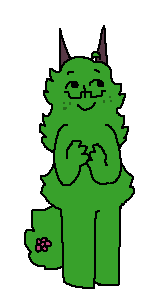

You are a ruler sending your subjects to expand your borders. Your subjects are the Poet, the Merchant, and the Bishop. All three are needed to attract commoners to support a kingdom. Each turn you place a different subject, and if all are present as they surround an empty plot of land, it will become another piece of your kingdom (Only 4 squares at a time can be claimed this way).
Subjects connected orthogonally form the walls of a kingdom.
Subjects can be sent to destroy and conquer enemy kingdoms by surrounding their walls, but you will gain less supportive commoners in the aftermath. War is an unpopular policy.
Walls can only be claimed when no open ground remains beside them.
A Deus falls from the heavens and inspires all the lands it touches, doubling the support of its connected kingdoms. It must be played before the winter months. (Your last 10 pieces) Conquering an enemy Deus extinguishes its inspiration.
When all subjects have been sent to the board, or there are no more moves to be made, the ruler with the most support wins.